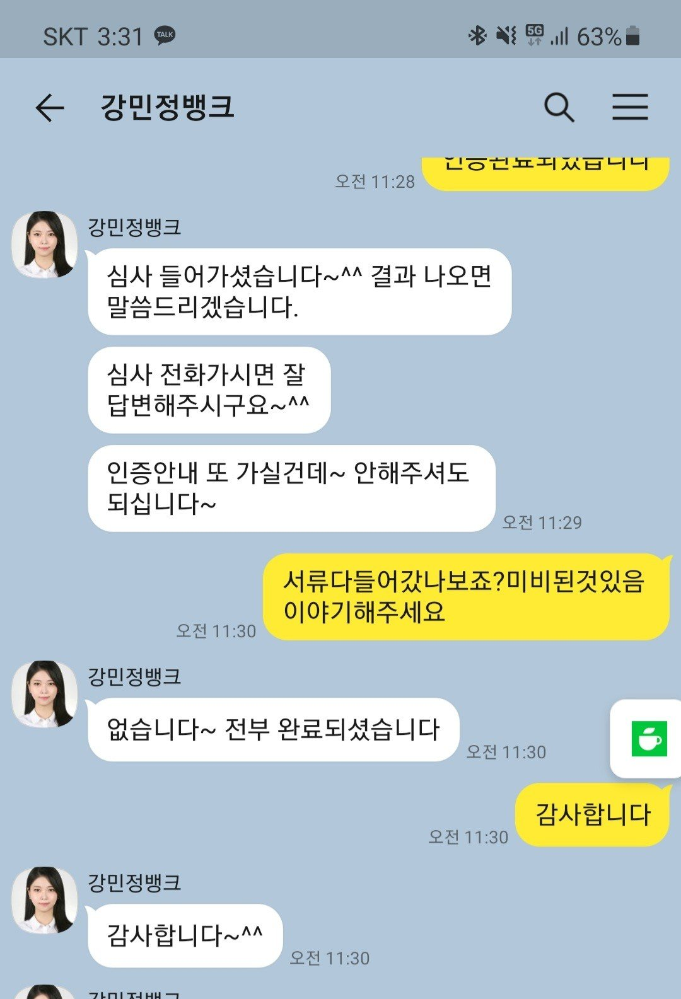

[개인회생자대출] 강민정상담사님 감사합니다.

개인회생이 이달이면 끝나서 면책받기만을 기다리던중에 갑자기 큰돈이 필요하게되어 앞이 캄캄해지더군요.
개인회생중에 어디서 대출이 되겠나라는 생각이 들어 포기해야하나라는 생각만 하고있었는데 검색중에 개인회생중에도 대출가능하다는 이야기가 있어 찾아보다 뱅크앤론을 알게되었습니다.그래도 은행이 아닌 다른곳에서 대출을 이야기하니 의심이 안들수가 없었습니다.그래도 혹시나하는 마음에 상담전화라도 해보자라고해서 연결을 하였는데 첫인사부터 마음이 놓이더라구요.자세히 안내를 받고 서류를 준비하다보니 희망이 보이더라구요.친절하게 상담해주시고 용기를 주신 강민정 상담사님 감사드려요!
https://cafe.naver.com/cityman88/289142
[이 게시물은 관리자 님에 의해 2022-09-21 18:20:50 상담후기 에서 이동됨]